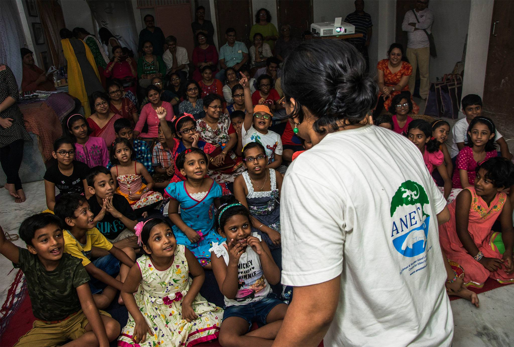
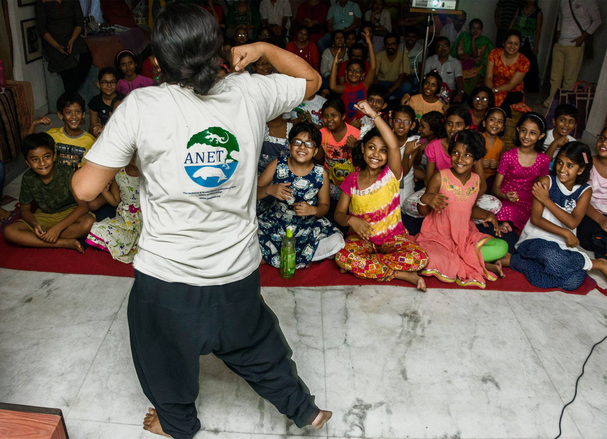
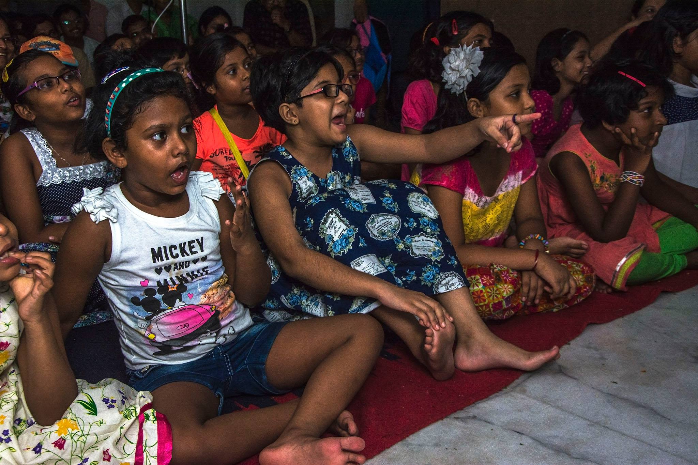
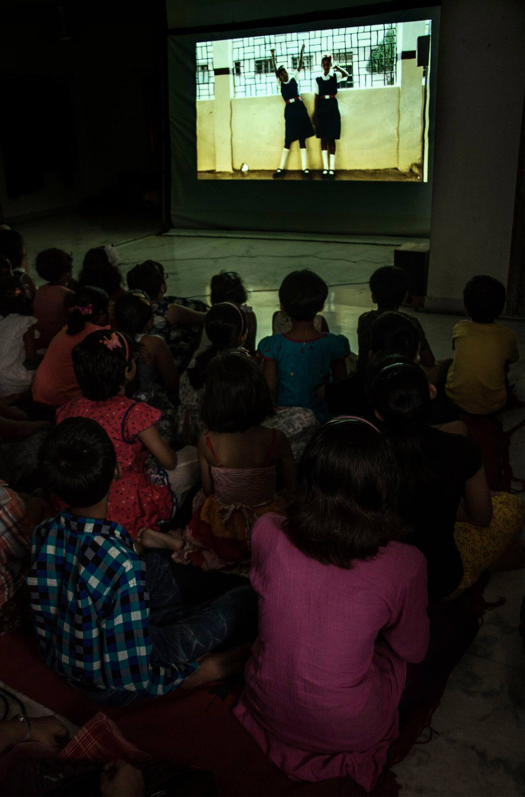
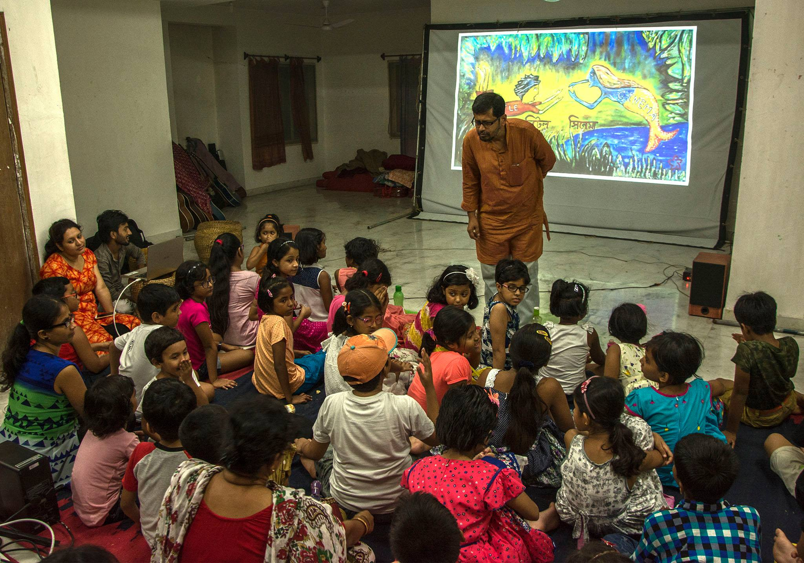
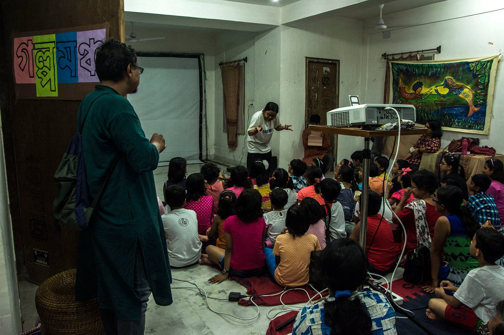
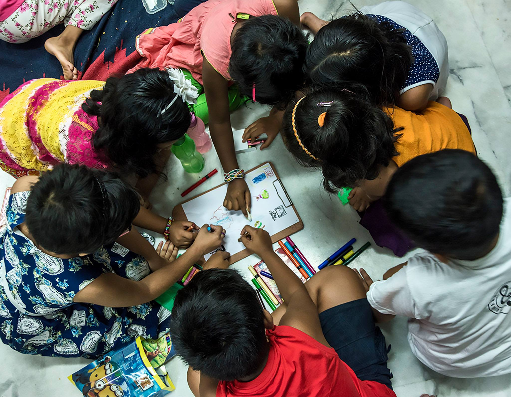
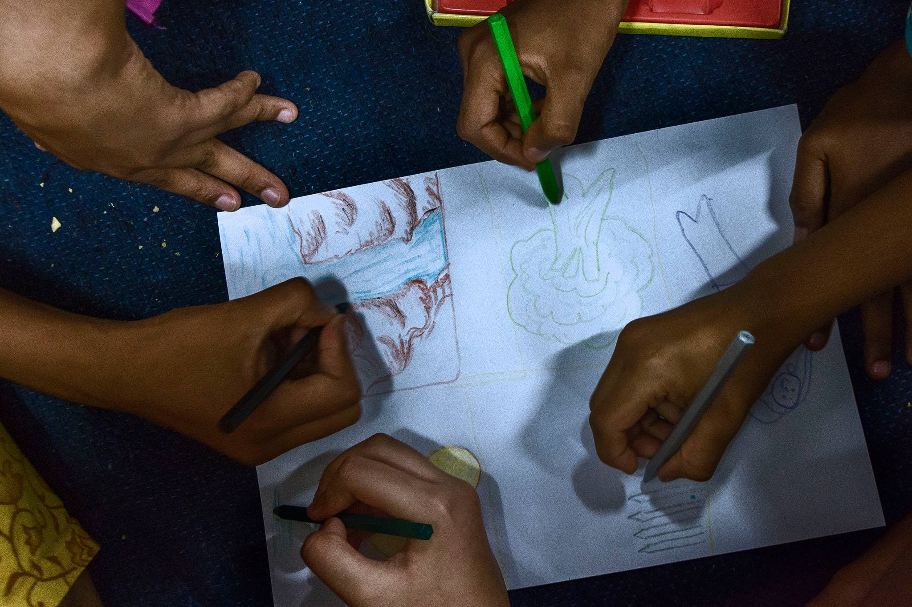

Little Cinema Diaries: Galpomancha
Watching films can be a purely entertaining experience. One that removes you from reality. Takes you to a realm of fantasy, of idealism. The other experience is one that is deeply rooted in reality and leads you to question, to comment and to think. This experience draws on what is happening in the world. And what has happened. And maybe what will happen, if we don’t act on it.
Acting on it does not necessarily mean taking up the metaphorical cudgel and becoming activists. But in a way it does, for the minute one questions and thinks critically, one is exactly that. An activist. A flag bearer for what is right.
Galpomancha organised a Little Cinema screening at a space in Kalikapur where they periodically gather, with the young children who are part of this forum for stories. Once the children and their guardians had settled down after a brief welcome by Samapti of Galpomancha, we began the screening with a game where the children had to mirror the actions they saw in front of them. This was great fun, not just for them but also for me, for this is the one rare time I can actually do something called ‘exercise’! It was also nice to see some of the parents join in. The first film they watched was Zoo. I asked them to take special notice of the actions that the animals were making. Of course the children pointed out that some of these actions were very similar to the ones that we humans make. The ensuing conversation then went onto discuss evolution and the fact that sometimes there are people who say that evolution is wrong and that humans could not have descended from the apes. The children then spoke about how they would try to counter people who presented non-scientific views.



We then moved onto Neighbours. The discussion after this was very interesting. We touched on peace between friends, neighbours and countries and how fighting over something as trivial as a flower—or in the case of India and Pakistan—Kashmir, can lead to so much devastation. One of the children said that war destroys lives and even the history of the place. The children offered solutions: instead of fighting the neighbours could have shared the flower. They could have built a garden. And so on. We then screened America America. The children pointed out the many things that were shown in the ‘music video’. I explained the context of the video, how the aftermath of the 9/11 attacks had become a devastating show of America’s might, likening it to bullying, which the children immediately explained as ‘if someone has a lot of things, they are bad to those who don’t’. We spoke about how big companies like Coca Cola and others destroy the places that they chose to build their factories in.


Chanda ke Jootey, made by the Ektara Collective was the next film screened. The discussion after the screening touched on topics of water conservation (how water was important to Chanda because in the basti she lived in there was water scarcity), how the education system showed seemed boring and how the teacher sounded, to quote one of the children ‘like she was reciting a poem’. One of the children said that ‘we go to school to learn, it shouldn’t be about the shoes we wear’.


After we showed Lipika Singh Darai’s recent film The Waterfall from Odisha in the context of mining next to the lush green hills and forests near the Khandadhar waterfall and one old Adivasi man’s resilience to give-in to the demands of the Company, Subhashish discussed the importance of conservation and forest rights of Adivasis with the children. One of the audience members spoke at length about what he felt about the film and how we must conserve our forests. Many chimed in with ‘trees give us oxygen!’ After this, K.P. Sasi’s Gaon Chodab Nahi, which has become iconic in the good fight against displacement and devastation of the Adivasi people in the name of ‘development’, came as a natural sequel, which the children enthusiastically clapped to.

We moved onto a clip from Modern Times, a Charlie Chaplin classic, in the context of May Day and the rights of workers. Subhashish made the children relate to the assembly line sequence as having to do many maths sums, in a short time, with no breaks in between, and absurdly cranking up the numbers of sums to be completed in that short time! One of the children even explained what May Day was all about. There were gasps when Chaplin ‘entered’ the world of the machine and an understanding about why it was shown. We ended with the video of a song about John Henry, sung by a young girl and then a brief drawing session where the children had to, in groups, draw one thing on a single sheet of paper, which they remembered from any of the films.


What was interesting was the conviction with which the children spoke. And the confidence. They spoke up when they observed something wrong, an injustice playing out on the screen in front of them. There was discussion and some debate. We were there as guides, allowing the children to express, question, contradict and stand up.
So many of us have become inured to the things we see every day on T.V, in the newspapers, in real life. As adults we often fail to even respond. There is a sense of ‘what good will it do?’ Listening to the children last Sunday evening, I wondered that if they could point out, instantly and instinctively what they saw as wrong, why can’t we adults? It is a question I know the answer to, but one that begs repetition. Why don’t we?

Photograhy: Aniruddha Dey